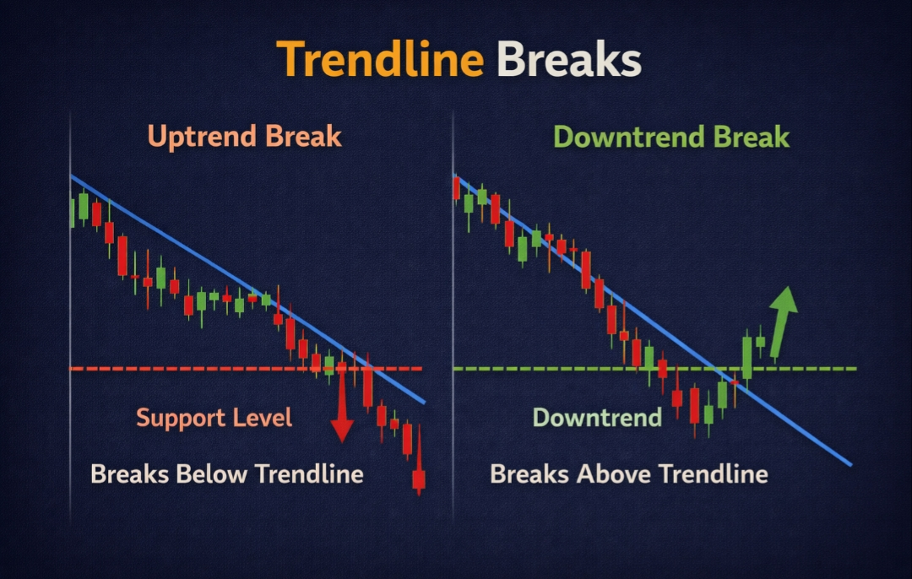

📊 Intraday Trading क्या है?
Intraday trading का मतलब है — एक ही दिन के अंदर stock, index या currency को buy करके sell कर देना। Market open होने के बाद position लो और market close (3:30 PM) होने से पहले exit कर दो।
इसे "Day Trading" भी कहते हैं। Intraday में आप overnight risk नहीं लेते — हर trade same day settle हो जाती है। इसी वजह से यह beginners के बीच popular है। लेकिन popular होने का मतलब आसान नहीं है।

💡 Important fact: India में intraday traders को "MIS" (Margin Intraday Square-off) product type use करना होता है। Broker automatically 3:20–3:25 PM के बीच open positions square off कर देता है अगर आप खुद नहीं करते।
Intraday vs Swing vs Investing — Difference
| Feature | Intraday | Swing Trading | Long-term Investing |
|---|---|---|---|
| Holding Period | कुछ मिनट – 1 दिन | 2 दिन – 4 हफ्ते | महीने – साल |
| Risk Level | High | Medium | Low (long-term) |
| Overnight Risk | ❌ नहीं | ✅ होता है | ✅ होता है |
| Time Required | Full-time attention | Part-time OK | Minimal |
| Profit Potential | Daily (छोटा) | Weekly (medium) | Long-term (बड़ा) |
🔥 Intraday Trading क्यों Popular है?
Intraday trading इतनी popular क्यों है? क्योंकि इसमें daily earning का मौका मिलता है और overnight risk नहीं होती। लेकिन इसके साथ challenges भी बहुत हैं।
Daily Earning Opportunity
Market open होने से close होने तक multiple opportunities मिलती हैं। Consistent small profits daily income बना सकते हैं।
No Overnight Risk
Gap down/up का डर नहीं। Budget, news, global events — सब same day में handle हो जाते हैं।
Quick Capital Rotation
एक trade close होती है, capital release होता है, दूसरा opportunity पकड़ सकते हो — same day में।
Leverage Available
Brokers intraday में extra leverage देते हैं (MIS margin)। लेकिन leverage double-edged sword है — सोच-समझकर use करो।
⚠️ Reality Check: Studies के अनुसार 80-90% intraday traders long-term में loss करते हैं। Intraday profitable है — लेकिन सिर्फ उन लोगों के लिए जो discipline, strategy और risk management seriously follow करते हैं।
⏰ Intraday के लिए Best Time Slots
Intraday trading में timing सबसे crucial factor है। पूरे दिन market एक जैसा behave नहीं करता। कुछ time slots high probability के होते हैं और कुछ में random movement होती है।
सबसे ज्यादा volume और volatility। Breakouts और trends यहीं set होते हैं।
⭐ BESTबहुत ज्यादा chaos। Retail traders को यह time avoid करना चाहिए।
❌ AVOIDVolume कम होती है। Trend continuation trades possible हैं।
⚠️ MODERATEEurope market open होता है। Volume बढ़ती है, strong moves आते हैं।
⭐ BESTSquare-off time। Random movements, avoid करो।
❌ AVOID💡 Pro Tip: अगर तुम sirf 2 घंटे trade कर सकते हो, तो 9:30–11:00 AM choose करो। इस time में सबसे ज्यादा quality setups मिलते हैं और volume strong होती है।
💰 Best Intraday Trading Strategies
कोई एक "best" strategy नहीं होती। लेकिन ये 3 strategies beginners के लिए सबसे practical और effective हैं। इन्हें समझो, practice करो, और जो तुम्हारे style से match करे उसे master करो।
जब price एक important resistance level को strong volume के साथ break करता है, तो एक fast और strong move आता है। इसी को पकड़ना breakout strategy है।
Logic: Resistance पर बहुत से sellers और buy stop orders होते हैं। जब resistance break होती है, तो sellers की short covering और buyers की aggressive buying एक साथ होती है — इससे fast move आता है।
- Pre-market में key resistance levels identify करो (previous day high, round numbers)
- Market open के बाद price को observe करो — जल्दी entry मत लो
- Resistance break होने पर volume spike check करो — बिना volume breakout weak होता है
- Breakout candle close होने के बाद entry लो (candle के ऊपर)
- Stop Loss: Breakout level के नीचे 2-3 ticks
- Target: Previous swing high या 1:2 risk reward minimum
📍 Real Example: NIFTY 22000 पर resistance है। Price 9:45 AM पर high volume के साथ 22010 पर close करता है → Entry at 22015 | Stop Loss: 21980 | Target: 22080 (1:2 RR)
Price जब एक strong support zone तक आकर reverse होता है, या resistance पर reject होता है — यह intraday में सबसे clean और predictable setup देता है।
Logic: Support और resistance zones पर बड़े traders के orders होते हैं। Price इन zones पर आकर react करती है। यह reaction pattern बार-बार repeat होता है।
- Pre-market में daily chart पर key support/resistance mark करो
- Price support पर आए तो bullish candlestick pattern wait करो
- Price resistance पर आए तो bearish rejection pattern wait करो
- Entry: Confirmation candle के बाद
- Stop Loss: Support/Resistance zone के दूसरी तरफ
- Target: अगला key level या 1:2 RR
VWAP (Volume Weighted Average Price) intraday का सबसे powerful indicator है। Institutions और large traders VWAP को benchmark की तरह use करते हैं।
Logic: Price VWAP के ऊपर है तो market bullish है, नीचे है तो bearish है। VWAP पर pullback आने के बाद trend direction में trade लेना high probability setup होता है।
- Market open के बाद VWAP calculate होना शुरू होता है — पहले 30 min settle होने दो
- Price VWAP के ऊपर है + VWAP पर pullback आया → Buy setup
- Price VWAP के नीचे है + VWAP तक bounce आया → Sell setup
- VWAP breakout (strong close above/below) → Momentum trade
- Stop Loss: VWAP के दूसरी तरफ थोड़ा buffer
✅ Best Combination: VWAP + RSI (oversold bounce on VWAP) = very high probability intraday setup। इसे master करने के लिए virtual trading में practice करो।

📊 Best Indicators for Intraday Trading
Indicators को आंख बंद करके follow नहीं करते — ये decision support tools हैं। Intraday में इन 4 indicators का combination काफी है।
Moving Average (9 EMA & 21 EMA)
9 EMA fast है, 21 EMA slow है। 9 EMA, 21 EMA के ऊपर → uptrend। Crossover पर momentum trades लो।
RSI (14 period)
Oversold (<30) पर buy setup, overbought (>70) पर sell setup। Divergence powerful signal देता है।
VWAP
Intraday का सबसे important level। Price VWAP के ऊपर = bullish bias। Institutions इसे track करते हैं।
MACD (12,26,9)
Trend + momentum दोनों दिखाता है। Bullish crossover zero line के पास = strong buy signal।

⚠️ Indicator Overload से बचो: बहुत से traders 5-6 indicators use करते हैं और confuse हो जाते हैं। 2-3 indicators enough हैं। VWAP + RSI या Moving Average + MACD — एक combination choose करो और उसे master करो।
🛡️ Intraday Risk Management — Most Important
Intraday में money बहुत fast move होता है। एक गलत trade बहुत quickly बड़ा loss दे सकता है। Risk management ही intraday में survival और success का secret है।
1% Rule — Never Break This
एक trade में maximum 1% capital risk करो। ₹50,000 capital पर maximum ₹500 risk per trade। यह rule emotionally tough लगता है लेकिन यही account बचाता है।
Daily Loss Limit Fix करो
एक दिन में 2-3% से ज्यादा loss हो तो trading बंद करो। "Bad day" accept करना सीखो। Forced recovery के attempts biggest losses देते हैं।
Stop Loss Entry से पहले Set करो
Trade लेने से पहले stop loss decide करो — trade में जाने के बाद SL move नहीं करते (नीचे की तरफ)। यह सबसे बड़ी discipline है।
Max 2-3 Trades Per Day (Beginners)
ज्यादा trades लेने से बेहतर नहीं होता — बेहतर trades लेना important है। 2-3 quality setups daily enough हैं।
Risk Reward Minimum 1:2
₹500 risk पर minimum ₹1000 target। इससे 40% win rate पर भी overall profitable रह सकते हो।
🧠 Intraday Trading Psychology
Intraday में price बहुत fast move करता है। यह speed emotions को trigger करती है। Fear, greed और FOMO intraday में सबसे dangerous enemies हैं।
Fear of Loss
Stop loss से पहले exit करना, या अच्छे setup में entry न लेना — डर से कभी profitable नहीं बनते।
Greed
Target hit होने के बाद भी hold करना। "थोड़ा और profit होगा" — यह सोच profits को losses में बदल देती है।
Revenge Trading
Loss के बाद तुरंत बड़ा trade लेना — यह intraday में account wipe करने का fastest तरीका है।
FOMO
Move देखकर बिना setup के entry लेना। Trade miss हो जाए — कोई बात नहीं। अगला opportunity आएगा।
🧘 Mindset Shift: Intraday trading को एक business की तरह treat करो। हर trade एक independent transaction है। एक loss पूरे दिन को affect नहीं करता — जब तक तुम उसे affect नहीं होने देते।
📅 Daily Intraday Routine — Beginner के लिए
Successful intraday traders random नहीं चलते। उनका एक structured daily routine होता है। यह routine follow करो:
📊 Real Trade Example — Step by Step
Theory समझ लिया — अब एक real example देखते हैं कि actual intraday trade कैसे plan और execute होती है।
- Pre-market: NIFTY का previous day high 22,000 था। यह strong resistance है।
- 9:15 – 9:30 AM: Market open हुआ 21,950 पर। Observe किया।
- 9:40 AM: Price 22,000 के पास consolidate हो रही है। Volume बढ़ रही है।
- 9:44 AM: 5-min candle 22,015 पर strong close। Volume spike है। Setup confirmed।
- Entry: 22,020 पर buy (candle break पर)
- Stop Loss: 21,980 (resistance level के नीचे) → Risk = 40 points
- Target: 22,100 (1:2 RR) → Potential profit = 80 points
- Result: 10:15 AM — Price 22,100 hit। Trade exit। ✅
✅ Key Lesson: Entry जल्दी नहीं ली, volume confirm किया, SL pre-defined था, target पर exit किया — greed नहीं की। यही perfect execution है।
🚀 Advanced Intraday Concepts
1. Price Action Trading (No Indicators)
Pure candlestick patterns और support/resistance से trade करना। कोई indicator नहीं — सिर्फ price movement पढ़ना। यह advanced traders का approach है जो market को directly समझते हैं।
2. Order Flow Analysis
Market में बड़े orders कहाँ place हो रहे हैं यह समझना। Level 2 data (bid/ask) और DOM (Depth of Market) use करके institutional activity track करना। यह professional intraday traders का tool है।
3. Multi-Timeframe Analysis (MTF)
Higher timeframe (15-min या 1-hour) पर trend देखो और lower timeframe (5-min) पर entry लो। यह false signals को काफी reduce करता है।
- 15-min chart → overall intraday trend
- 5-min chart → exact entry timing
- 1-min chart → fine-tune entry (advanced)
4. Gap Analysis
जब market previous day close से काफी ऊपर या नीचे open होता है — इसे "Gap" कहते हैं। Gap fill होने की tendency होती है। Experienced traders इसे intraday opportunity की तरह use करते हैं।
⚠️ Biggest Intraday Mistakes जो Beginners करते हैं
पहले 15 Minutes में Trade लेना
Market open होने के बाद पहले 15 minutes में chaos होती है। Price erratically move करता है, fake breakouts होते हैं। इस time में trade लेना professional traders को भी avoid करना चाहिए।
Without Setup Entry लेना
"Price move हो रहा है, enter करते हैं" — यह random gambling है, trading नहीं। बिना clear setup (candlestick pattern + key level + volume confirmation) trade मत लो।
Overtrading
हर move पकड़ने की कोशिश करना। ज्यादा trades = ज्यादा brokerage fees + emotional decisions + exhaustion। 2-3 quality trades daily enough हैं।
Stop Loss Move करना (Down)
Trade loss में जाने पर "थोड़ा और wait करते हैं" — और SL हटा देते हैं। यही सबसे account-destroying habit है। Stop loss एक promise है — खुद से।
News पर Blindly Trade करना
Budget, RBI policy, earnings results — इन पर trade करना expert level काम है। Beginners के लिए news events के दौरान trading avoid करना best है।
❓ Frequently Asked Questions
Intraday trading के लिए minimum capital कितना होना चाहिए?
Technically कोई minimum नहीं है, लेकिन practically ₹10,000–₹25,000 से start करना reasonable है। इससे कम capital में 1% risk rule follow करना मुश्किल हो जाता है क्योंकि per trade risk बहुत कम हो जाता है। याद रखो — यह capital वह होना चाहिए जिसे आप lose कर सकते हो।
Intraday trading में कौन सा stock choose करना चाहिए?
Intraday के लिए high liquidity stocks choose करो — जैसे NIFTY 50 के stocks (Reliance, TCS, Infosys, HDFC Bank, SBI, Tata Motors आदि)। Index (NIFTY, BANKNIFTY) भी intraday के लिए excellent हैं। Low volume penny stocks से बिल्कुल बचो।
क्या Intraday trading beginners के लिए suitable है?
Intraday बहुत fast-paced है और emotional control demand करती है जो beginners के लिए initially कठिन होता है। Ideally, पहले 6-12 महीने BullBear Market जैसे platform पर virtual trading practice करो, candlestick/indicators सीखो, फिर small capital से real intraday try करो।
Intraday में कितना profit realistic है?
Realistic expectation: Consistent intraday traders monthly 3-5% return target करते हैं। "रोज 1000 कमाऊंगा" — यह unrealistic goal है। Focus monthly consistency पर रखो, daily P&L पर नहीं। Compounding के साथ monthly 3-5% over time बड़ी wealth बनाती है।
Intraday trading में कौन से indicators सबसे important हैं?
Beginners के लिए: VWAP + RSI combination सबसे practical है। VWAP bias देता है (bullish/bearish), RSI entry timing देता है (oversold/overbought)। इसमें Moving Average add करो trend confirmation के लिए — यह three-indicator system intraday के लिए complete है।
क्या virtual trading से intraday सीख सकते हैं?
हाँ, बिल्कुल। Virtual trading real market data पर होती है, इसलिए setups, timing, indicators — सब कुछ same experience मिलता है। Main difference सिर्फ emotions का होता है (real money नहीं होता)। BullBear Market पर virtual intraday practice करो और फिर real trading में जाओ।
⚡ Virtual Intraday Practice शुरू करो — Free
Theory पढ़ लिया — अब BullBear Market पर virtual money से intraday strategies practice करो। Real market data, zero risk, real learning।